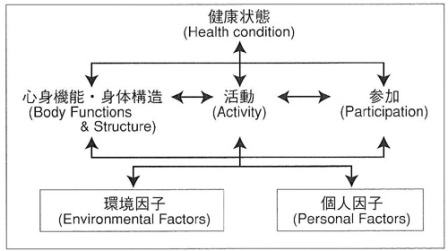

福祉とは、「しあわせ」や「ゆたかさ」を意味する言葉であり、
すべての市民に最低限の幸福と社会的援助を提供するという理念を指す。
Wikipedia引用
福祉工学とは、障害者や高齢者らに対して工学的に支援する学問のことを言う。
※工学：自然科学などの科学の知識を応用して実用的で社会の利益となるような手法や技術を発見し、製品の発明などに生かすことを
主な研究目的とする学問の総称
障害の定義を分類したしたものを以下に示す。
例えば、事故で足が無くなったとすると、
この分類では、「Disabilities（能力障害）」について工学的に対処することが可能で、 技術者はこの対処にあたる。また、「Handicaps（社会的不利）」は意識の問題であり、環境に大きく左右される。
こうした分類ではいくつかの欠点がある。例えば小指切断という事故は、どれだけの能力障害が起きるのだろうか。 日常生活にそれほど大きく影響がないように見えるが、もしその人がピアニストであればピアノが弾けなくなり、仕事がなくなるという 大きな障害となる。このように、対象者によって結果が違ってくるという問題がある。
これは、障害者だけに対応せずに、全員の生活機能について考えたものである。

ICIDHからICFへの流れ